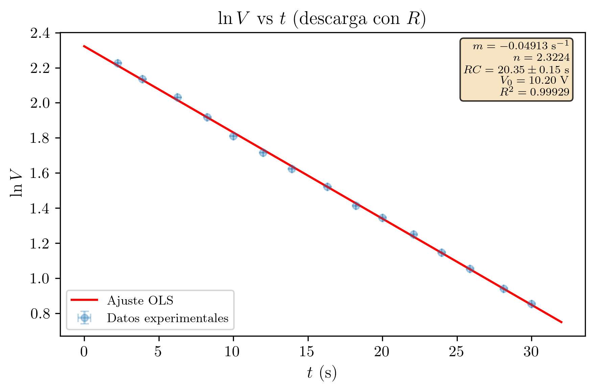
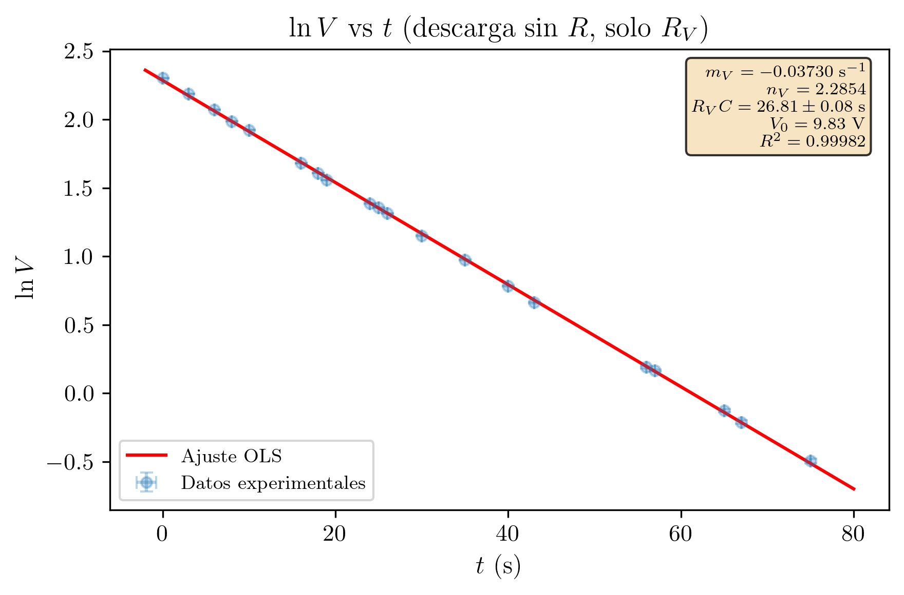
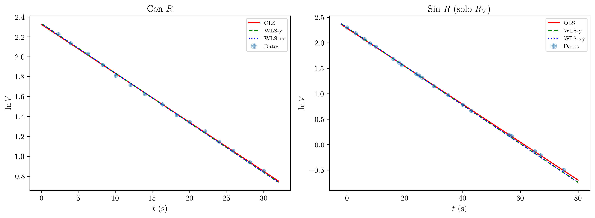

Práctica 6 — Técnicas Experimentales I
2026-03-07
Se estudia experimentalmente el proceso de descarga de un condensador a través de una resistencia, determinando la constante de tiempo \tau = RC del circuito mediante dos métodos independientes: la medida directa del tiempo de semidescarga t_{1/2} y el ajuste por mínimos cuadrados de la representación linealizada \ln V frente a t. Se obtiene RC_{t_{1/2}} = (20.70 \pm 0.16) s y RC_{\text{reg}} = (20.35 \pm 0.15) s, valores coherentes a nivel del 2%. Adicionalmente, se estudia la descarga sin resistencia externa, obteniendo R_V C = (26.81 \pm 0.08) s, lo que permite estimar la resistencia interna del voltímetro.
| Asignatura | Técnicas Experimentales I (Cod. 61041080) |
| Práctica | Práctica 6: Descarga de un Condensador |
| Alumna | María López Fernández |
| DNI | 12345678A |
| Correo electrónico | mlopezfernandez42@ejemplo.uned.es |
| Teléfono | 612 345 678 |
| Centro Asociado | Madrid - Gregorio Marañón |
| Tutor | Dr. Fernando García Martínez |
| Fecha de realización | 27 de febrero de 2026 |
| Fecha de entrega | 7 de marzo de 2026 |
El objetivo de esta práctica es el estudio experimental del proceso de descarga de un condensador a través de una resistencia, determinando la constante de tiempo \tau = RC del circuito mediante dos métodos independientes: la medida directa del tiempo de semidescarga t_{1/2} y el ajuste por mínimos cuadrados de la curva de descarga V(t).
La descarga de un condensador es un proceso transitorio fundamental en los circuitos eléctricos. Cuando un condensador cargado se conecta a una resistencia, la diferencia de potencial entre sus placas decrece exponencialmente con el tiempo, con una constante de tiempo \tau = RC que depende del producto de la resistencia por la capacidad. La constante de tiempo determina la velocidad del proceso: cuanto mayor es RC, más lenta es la descarga.
Adicionalmente, se estudia la descarga del condensador sin resistencia externa, donde la única vía de descarga es la resistencia interna del voltímetro. Esto permite poner de manifiesto que todo instrumento de medida perturba el sistema medido y estimar el orden de magnitud de la resistencia interna del voltímetro.
La comparación de los resultados obtenidos por los dos métodos (tiempo de semidescarga y regresión lineal) permite evaluar la coherencia de las medidas y la calidad del modelo teórico.
Consideremos un condensador de capacidad C, inicialmente cargado a una diferencia de potencial V_0, que se descarga a través de una resistencia R. Aplicando la ley de Kirchhoff al circuito RC serie:
V_C + V_R = 0 \quad \Longrightarrow \quad \frac{q}{C} + R\frac{dq}{dt} = 0
donde q es la carga del condensador e i = dq/dt es la corriente (negativa, pues el condensador se descarga). Dado que V = q/C:
RC\frac{dV}{dt} + V = 0
La solución de esta ecuación diferencial, con la condición inicial V(0) = V_0, es:
\boxed{V(t) = V_0 \cdot \exp\left(-\frac{t}{RC}\right)}
La constante de tiempo del circuito es \tau = RC. Para t = \tau, el voltaje ha disminuido al 36.8\% (1/e) de su valor inicial.
El tiempo de semidescarga t_{1/2} es el tiempo necesario para que el voltaje se reduzca a la mitad de su valor inicial. Imponiendo V(t_{1/2}) = V_0/2:
\frac{V_0}{2} = V_0 \cdot \exp\left(-\frac{t_{1/2}}{RC}\right)
\frac{1}{2} = \exp\left(-\frac{t_{1/2}}{RC}\right)
Tomando logaritmos neperianos:
\ln\left(\frac{1}{2}\right) = -\frac{t_{1/2}}{RC} \quad \Longrightarrow \quad -\ln 2 = -\frac{t_{1/2}}{RC}
\boxed{t_{1/2} = RC \cdot \ln 2 = 0.69315 \cdot RC}
Por tanto, midiendo t_{1/2} se obtiene directamente la constante de tiempo:
RC = \frac{t_{1/2}}{\ln 2}
Tomando logaritmos neperianos en la ecuación de descarga:
\ln V = \ln V_0 - \frac{t}{RC}
Esta expresión tiene la forma y = n + m \cdot x, con:
La constante de tiempo se obtiene de la pendiente del ajuste lineal:
\boxed{RC = -\frac{1}{m} = \frac{1}{|m|}}
Método del tiempo de semidescarga:
\Delta(RC) = \frac{\Delta t_{1/2}}{\ln 2}
Método de regresión lineal:
Dado que RC = 1/|m|:
\frac{\partial(RC)}{\partial m} = \frac{\partial}{\partial m}\left(-\frac{1}{m}\right) = \frac{1}{m^2}
\boxed{\Delta(RC) = \frac{\sigma_m}{m^2}}
Si se retira la resistencia R del circuito, el condensador sólo puede descargarse a través de la resistencia interna del voltímetro R_V. En este caso, la constante de tiempo es \tau_V = R_V \cdot C. Dado que R_V \gg R (típicamente R_V \sim 10 M\Omega para voltimetros digitales), la descarga es mucho más lenta, lo que se manifiesta en un valor de \tau_V significativamente mayor que \tau = RC.
El dispositivo experimental consiste en un circuito RC serie compuesto por:
El circuito se monta de modo que, al cerrar el interruptor, el condensador previamente cargado se descarga a través de la resistencia R. El voltímetro, conectado en paralelo con el condensador, permite seguir la evolución temporal del voltaje.
| Instrumento | Magnitud medida | Precisión |
|---|---|---|
| Cronómetro digital | Tiempo t | \varepsilon_t = 0.01 s |
| Voltímetro digital (multímetro) | Diferencia de potencial V | \varepsilon_V = 0.01 V |
Condiciones ambientales (A2): Las medidas se realizaron a temperatura ambiente de aproximadamente 20 \pm 2 °C y humedad relativa del 50 \pm 10\%. Las condiciones ambientales se mantuvieron estables durante toda la sesión de laboratorio. La temperatura puede influir ligeramente en el valor de la resistencia y la capacidad del condensador electrolítico, aunque para las tolerancias de este experimento dicha influencia es despreciable.
Estado de calibración y trazabilidad (B2/B3): El multímetro digital utilizado como voltímetro se encuentra dentro de su período de calibración vigente, según la etiqueta de verificación del laboratorio. El cronómetro digital está calibrado de fábrica con base de tiempos de cuarzo, trazable a patrones de frecuencia. Las especificaciones de precisión de ambos instrumentos se consideran trazables a patrones nacionales a través de la cadena de calibración del laboratorio. No se dispone de certificados de calibración individuales; las incertidumbres de tipo B se estiman a partir de las especificaciones del fabricante.
Interruptor S
/
+---[ C ]---o o---[ R ]---+
| | |
| Condensador| Resistencia |
| | |
+---[ V ]---+----------------+
Voltímetro
(multímetro)
Procedimiento:
1. Cargar C con fuente hasta V₀ ≈ 10 V
2. Desconectar fuente
3. Cerrar S → comienza la descarga a través de R
4. Medir V(t) con el voltímetroFigura 1. Esquema del circuito de descarga del condensador. El interruptor S permite iniciar la descarga. El voltímetro mide la tensión en bornes del condensador.
La práctica se divide en tres partes: (1) medida del tiempo de semidescarga, (2) registro de la curva de descarga con resistencia, y (3) registro de la curva de descarga sin resistencia (sólo a través del voltímetro).
Se identifican las siguientes fuentes de error clasificadas por tipo:
Errores sistemáticos:
Errores aleatorios:
Para los instrumentos digitales, la resolución define una semianchura a igual a la mitad del último dígito significativo. Se asume una distribución rectangular (uniforme) para el valor verdadero dentro del intervalo de resolución. La incertidumbre estándar asociada es:
u_{\text{resol}} = \frac{a}{\sqrt{3}}
Además, el cronómetro está sujeto a una incertidumbre adicional de tipo B debida al tiempo de reacción del operador. Típicamente, el tiempo de reacción humano se estima en \pm 0.2 s (distribución rectangular), lo que aporta u_{\text{reacción}} = 0.2/\sqrt{3} = 0.12 s. Esta incertidumbre se manifiesta en la dispersión de las medidas repetidas de t_{1/2} y, por tanto, queda parcialmente capturada en la evaluación de tipo A.
Se carga el condensador hasta un voltaje V_0 \approx 10 V y se inicia la descarga a través de R. Se mide con el cronómetro el tiempo que tarda el voltaje en reducirse a la mitad (V_0/2 \approx 5 V). Se repite la medida 5 veces.
Tabla 1. Medidas del tiempo de semidescarga t_{1/2}.
| Medida | t_{1/2} (s) |
|---|---|
| 1 | 14.44 |
| 2 | 14.43 |
| 3 | 14.31 |
| 4 | 14.34 |
| 5 | 14.22 |
Cálculo del valor medio:
\overline{t_{1/2}} = \frac{14.44 + 14.43 + 14.31 + 14.34 + 14.22}{5} = \frac{71.74}{5} = 14.35 \text{ s}
Cálculo de la incertidumbre:
Se han realizado N = 5 repeticiones. Dado que 1 < N \leq 10, la incertidumbre se calcula como:
\varepsilon_{t_{1/2}} = \max(\varepsilon_p,\; D_m)
donde: - \varepsilon_p = 0.01 s es la precisión del cronómetro. - D_m = \frac{\max(t_i) - \min(t_i)}{2} = \frac{14.44 - 14.22}{2} = \frac{0.22}{2} = 0.11 s es la semidispersión máxima.
\varepsilon_{t_{1/2}} = \max(0.01,\; 0.11) = 0.11 \text{ s}
El error 0.11 comienza por la cifra 1, por lo que se conservan 2 cifras significativas en el error:
\boxed{t_{1/2} = (14.35 \pm 0.11) \text{ s}}
Evaluación de la incertidumbre de tipo A (F1-F4):
Con N = 5 medidas repetidas, la desviación típica muestral (con denominador N-1, estimador insesgado, F2) es:
s = \sqrt{\frac{\sum_{i=1}^{N}(t_i - \bar{t})^2}{N-1}} = \sqrt{\frac{(14.44-14.35)^2 + (14.43-14.35)^2 + (14.31-14.35)^2 + (14.34-14.35)^2 + (14.22-14.35)^2}{4}}
s = \sqrt{\frac{0.0081 + 0.0064 + 0.0016 + 0.0001 + 0.0169}{4}} = \sqrt{\frac{0.0331}{4}} = \sqrt{0.008275} = 0.091 \text{ s}
La incertidumbre estándar de la media (tipo A, F3) es:
u_A(\bar{t}_{1/2}) = \frac{s}{\sqrt{N}} = \frac{0.091}{\sqrt{5}} = 0.041 \text{ s}
Los grados de libertad asociados a esta evaluación de tipo A son (F4):
\nu_A = N - 1 = 5 - 1 = 4
Combinación de incertidumbres tipo A y tipo B por RSS (H8):
La incertidumbre de tipo B del cronómetro por resolución es u_B(t) = 0.005/\sqrt{3} = 0.0029 s (con \nu_B \to \infty). Dado que la dispersión experimental (tipo A) ya captura implícitamente las fluctuaciones debidas al tiempo de reacción del operador, se combinan únicamente la componente de tipo A con la componente de tipo B por resolución:
u_c(\bar{t}_{1/2}) = \sqrt{u_A^2 + u_B^2} = \sqrt{(0.041)^2 + (0.0029)^2} = \sqrt{0.001681 + 0.0000084} = 0.041 \text{ s}
La componente de tipo A domina completamente (u_A/u_c > 99.9\%), como era esperable dado que la dispersión por el tiempo de reacción del operador es mucho mayor que la resolución del cronómetro.
Cálculo de RC a partir de t_{1/2}:
RC = \frac{t_{1/2}}{\ln 2} = \frac{14.35}{0.69315} = 20.70 \text{ s}
Propagación del error:
\Delta(RC) = \frac{\Delta t_{1/2}}{\ln 2} = \frac{0.11}{0.69315} = 0.16 \text{ s}
El error 0.16 comienza por la cifra 1, por lo que se conservan 2 cifras significativas:
\boxed{RC_{t_{1/2}} = (20.70 \pm 0.16) \text{ s}}
Se carga el condensador y se registran 15 pares de valores (t, V) durante la descarga a través de R.
Tabla 2. Datos de la descarga con R: tiempo t, voltaje V, y logaritmo neperiano \ln V.
| Medida | t (s) | V (V) | \ln V |
|---|---|---|---|
| 1 | 2.25 | 9.27 | 2.2268 |
| 2 | 3.91 | 8.46 | 2.1353 |
| 3 | 6.25 | 7.62 | 2.0308 |
| 4 | 8.25 | 6.81 | 1.9184 |
| 5 | 10.00 | 6.11 | 1.8099 |
| 6 | 12.00 | 5.56 | 1.7156 |
| 7 | 13.93 | 5.07 | 1.6233 |
| 8 | 16.31 | 4.58 | 1.5217 |
| 9 | 18.22 | 4.11 | 1.4134 |
| 10 | 20.00 | 3.84 | 1.3455 |
| 11 | 22.09 | 3.49 | 1.2499 |
| 12 | 23.97 | 3.15 | 1.1474 |
| 13 | 25.87 | 2.87 | 1.0543 |
| 14 | 28.13 | 2.56 | 0.9400 |
| 15 | 30.00 | 2.35 | 0.8544 |
Ejemplo de cálculo de \ln V (Medida 1):
\ln V_1 = \ln(9.27) = 2.2268
Se ajusta el modelo lineal y = mx + n (es decir, \ln V = m \cdot t + n) a los N_p = 15 puntos experimentales. Según la teoría:
m = -\frac{1}{RC}, \qquad n = \ln V_0
Fórmulas de la regresión por mínimos cuadrados:
m = \frac{N_p \sum x_i y_i - \sum x_i \sum y_i}{N_p \sum x_i^2 - \left(\sum x_i\right)^2} = \frac{\Delta_{xy}}{\Delta}
n = \frac{\sum x_i^2 \sum y_i - \sum x_i \sum x_i y_i}{N_p \sum x_i^2 - \left(\sum x_i\right)^2} = \frac{\Delta_n}{\Delta}
Tabla 3. Sumas para la regresión lineal (x_i = t_i, y_i = \ln V_i).
| i | x_i | y_i | x_i^2 | x_i \cdot y_i | y_i^2 |
|---|---|---|---|---|---|
| 1 | 2.25 | 2.2268 | 5.0625 | 5.0103 | 4.9586 |
| 2 | 3.91 | 2.1353 | 15.2881 | 8.3492 | 4.5597 |
| 3 | 6.25 | 2.0308 | 39.0625 | 12.6924 | 4.1241 |
| 4 | 8.25 | 1.9184 | 68.0625 | 15.8267 | 3.6802 |
| 5 | 10.00 | 1.8099 | 100.0000 | 18.0993 | 3.2758 |
| 6 | 12.00 | 1.7156 | 144.0000 | 20.5872 | 2.9433 |
| 7 | 13.93 | 1.6233 | 194.0449 | 22.6131 | 2.6352 |
| 8 | 16.31 | 1.5217 | 266.0161 | 24.8189 | 2.3156 |
| 9 | 18.22 | 1.4134 | 331.9684 | 25.7526 | 1.9978 |
| 10 | 20.00 | 1.3455 | 400.0000 | 26.9094 | 1.8103 |
| 11 | 22.09 | 1.2499 | 487.9681 | 27.6103 | 1.5623 |
| 12 | 23.97 | 1.1474 | 574.5609 | 27.5032 | 1.3165 |
| 13 | 25.87 | 1.0543 | 669.2569 | 27.2751 | 1.1116 |
| 14 | 28.13 | 0.9400 | 791.2969 | 26.4424 | 0.8836 |
| 15 | 30.00 | 0.8544 | 900.0000 | 25.6325 | 0.7300 |
| \Sigma | 241.18 | 22.9868 | 4986.5878 | 315.1226 | 37.9045 |
Cálculo del determinante \Delta:
\Delta = N_p \sum x_i^2 - \left(\sum x_i\right)^2 = 15 \times 4986.5878 - (241.18)^2 = 74798.82 - 58167.79 = 16631.02
Cálculo de la pendiente m:
m = \frac{N_p \sum x_i y_i - \sum x_i \sum y_i}{\Delta} = \frac{15 \times 315.1226 - 241.18 \times 22.9868}{16631.02}
m = \frac{4726.84 - 5543.96}{16631.02} = \frac{-817.12}{16631.02} = -0.04913
Cálculo de la ordenada en el origen n:
n = \frac{\sum x_i^2 \sum y_i - \sum x_i \sum x_i y_i}{\Delta} = \frac{4986.5878 \times 22.9868 - 241.18 \times 315.1226}{16631.02}
n = \frac{114625.70 - 76001.26}{16631.02} = \frac{38624.44}{16631.02} = 2.3224
Varianza residual y desviaciones típicas:
S^2 = \frac{\sum(y_i - mx_i - n)^2}{N_p - 2} = \frac{0.001887}{13} = 1.452 \times 10^{-4}
\sigma_m = \sqrt{\frac{N_p \cdot S^2}{\Delta}} = \sqrt{\frac{15 \times 1.452 \times 10^{-4}}{16631.02}} = 0.00036
\sigma_n = \sqrt{\frac{\sum x_i^2 \cdot S^2}{\Delta}} = \sqrt{\frac{4986.59 \times 1.452 \times 10^{-4}}{16631.02}} = 0.0066
Coeficiente de correlación:
r = \frac{N_p \sum x_i y_i - \sum x_i \sum y_i}{\sqrt{\left(N_p \sum x_i^2 - (\sum x_i)^2\right)\left(N_p \sum y_i^2 - (\sum y_i)^2\right)}}
r = \frac{-817.12}{\sqrt{16631.02 \times 40.17}} = \frac{-817.12}{817.40} = -0.99965
El valor de |r| es extremadamente próximo a 1, lo que confirma una correlación lineal prácticamente perfecta y válida tanto el modelo teórico de descarga exponencial como la calidad de los datos experimentales.
Resumen del ajuste lineal (Parte 2):
| Parámetro | Valor |
|---|---|
| m (pendiente) | (-0.04913 \pm 0.00036) s^{-1} |
| n (ordenada) | (2.322 \pm 0.007) |
| r (correlación) | -0.99965 |
| r^2 | 0.99929 |
De la pendiente del ajuste:
RC = -\frac{1}{m} = -\frac{1}{-0.04913} = 20.35 \text{ s}
Propagación de la incertidumbre:
\Delta(RC) = \frac{\sigma_m}{m^2} = \frac{0.00036}{(0.04913)^2} = \frac{0.00036}{0.002414} = 0.15 \text{ s}
El error 0.15 comienza por la cifra 1, por lo que se conservan 2 cifras significativas:
\boxed{RC_{\text{reg}} = (20.35 \pm 0.15) \text{ s}}
Voltaje inicial extrapolado:
V_0 = e^n = e^{2.3224} = 10.20 \text{ V}
Este valor es coherente con el voltaje de carga inicial (\approx 10 V).
Error relativo de RC_{\text{reg}}:
\delta_{RC} = \frac{\Delta(RC)}{RC} \times 100 = \frac{0.15}{20.35} \times 100 = 0.7\%
Los residuos del ajuste lineal e_i = y_i - (m \cdot x_i + n) proporcionan información sobre la calidad del modelo. Los grados de libertad de la varianza residual son \nu_{\text{fit}} = N_p - p = 15 - 2 = 13 (I4), donde p = 2 es el número de parámetros ajustados (pendiente y ordenada).
Los residuos calculados para cada punto experimental son:
| Medida | t_i (s) | \ln V_i (obs.) | \ln V_i (calc.) | Residuo e_i |
|---|---|---|---|---|
| 1 | 2.25 | 2.2268 | 2.2118 | +0.0150 |
| 2 | 3.91 | 2.1353 | 2.1299 | +0.0054 |
| 3 | 6.25 | 2.0308 | 2.0151 | +0.0157 |
| 4 | 8.25 | 1.9184 | 1.9168 | +0.0016 |
| 5 | 10.00 | 1.8099 | 1.8311 | -0.0212 |
| 6 | 12.00 | 1.7156 | 1.7327 | -0.0171 |
| 7 | 13.93 | 1.6233 | 1.6380 | -0.0147 |
| 8 | 16.31 | 1.5217 | 1.5211 | +0.0006 |
| 9 | 18.22 | 1.4134 | 1.4273 | -0.0139 |
| 10 | 20.00 | 1.3455 | 1.3399 | +0.0056 |
| 11 | 22.09 | 1.2499 | 1.2373 | +0.0126 |
| 12 | 23.97 | 1.1474 | 1.1449 | +0.0025 |
| 13 | 25.87 | 1.0543 | 1.0515 | +0.0028 |
| 14 | 28.13 | 0.9400 | 0.9405 | -0.0005 |
| 15 | 30.00 | 0.8544 | 0.8486 | +0.0058 |
La desviación típica residual (rms) es S = \sqrt{S^2} = \sqrt{1.452 \times 10^{-4}} = 0.01205 (I3). Los residuos no muestran una tendencia sistemática evidente (deriva, oscilación periódica o curvatura), sino que fluctúan aleatoriamente en torno a cero. Esto confirma que el modelo de descarga exponencial (\ln V lineal en t) es adecuado para describir los datos experimentales.
Se representa \ln V en el eje de ordenadas frente a t en el eje de abscisas, junto con la recta de regresión ajustada por mínimos cuadrados.

| Método | RC (s) | \Delta(RC) (s) |
|---|---|---|
| Tiempo de semidescarga | (20.70 \pm 0.16) | 0.16 |
| Regresión lineal | (20.35 \pm 0.15) | 0.15 |
Criterio de compatibilidad:
|RC_{t_{1/2}} - RC_{\text{reg}}| = |20.70 - 20.35| = 0.35 \text{ s}
\Delta RC_{t_{1/2}} + \Delta RC_{\text{reg}} = 0.16 + 0.15 = 0.31 \text{ s}
Dado que 0.35 > 0.31:
|RC_{t_{1/2}} - RC_{\text{reg}}| > \Delta RC_{t_{1/2}} + \Delta RC_{\text{reg}}
Los dos valores no son estrictamente compatibles dentro de la suma de incertidumbres. No obstante, la discrepancia es marginal (0.35 vs. 0.31) y la diferencia relativa entre ambos métodos es pequeña:
\delta_{\text{rel}} = \frac{|20.70 - 20.35|}{(20.70 + 20.35)/2} \times 100 = \frac{0.35}{20.53} \times 100 = 1.7\%
Esta discrepancia puede atribuirse a:
En cualquier caso, ambos resultados son coherentes a nivel del 2\%, lo que confirma la validez del modelo de descarga exponencial.
Modelo del mensurando (H1):
RC = \frac{t_{1/2}}{\ln 2}
donde t_{1/2} es el tiempo de semidescarga medio y \ln 2 = 0.69315 es una constante exacta (sin incertidumbre).
Coeficiente de sensibilidad (H2):
c_{t_{1/2}} = \frac{\partial (RC)}{\partial t_{1/2}} = \frac{1}{\ln 2} = 1.4427 \text{ s/s}
Fuentes de incertidumbre y combinación (H3, H5, H8):
La incertidumbre combinada de \bar{t}_{1/2} tiene dos componentes:
Combinación por RSS:
u_c(\bar{t}_{1/2}) = \sqrt{u_A^2 + u_B^2} = \sqrt{(0.041)^2 + (0.0029)^2} = 0.041 \text{ s}
Propagación al mensurando:
u_c(RC) = |c_{t_{1/2}}| \cdot u_c(\bar{t}_{1/2}) = 1.4427 \times 0.041 = 0.059 \text{ s}
Tabla de balance de incertidumbres (N1) para RC_{t_{1/2}}:
| Magnitud de entrada | Estimación | u(x_i) | Tipo | c_i | |c_i \cdot u(x_i)| (s) | \nu_i |
|---|---|---|---|---|---|---|
| \bar{t}_{1/2} (tipo A) | 14.35 s | 0.041 s | A | 1/\ln 2 = 1.4427 | 0.059 | 4 |
| t (resolución) | — | 0.0029 s | B (rectangular) | 1/\ln 2 = 1.4427 | 0.0042 | \infty |
| u_c(RC) | 0.059 s |
Grados de libertad efectivos — Fórmula de Welch-Satterthwaite (J1):
\nu_{\text{eff}} = \frac{u_c^4(RC)}{\displaystyle\sum_i \frac{(c_i \cdot u_i)^4}{\nu_i}} = \frac{(0.059)^4}{\dfrac{(0.059)^4}{4} + \dfrac{(0.0042)^4}{\infty}}
El segundo término del denominador es cero (\nu_B \to \infty), por lo que:
\nu_{\text{eff}} = \frac{(0.059)^4}{(0.059)^4 / 4} = 4.0
Se trunca (no se redondea) al entero inferior (J2): \nu_{\text{eff}} = 4.
Factor de cobertura (J3):
Para \nu_{\text{eff}} = 4 y un nivel de confianza del 95% (J4), de la tabla de la distribución t de Student:
k = t_{0.975, 4} = 2.776
Incertidumbre expandida (J5):
U = k \cdot u_c(RC) = 2.776 \times 0.059 = 0.16 \text{ s}
Resultado final (J6):
\boxed{RC_{t_{1/2}} = (20.70 \pm 0.16) \text{ s}, \quad k = 2.78, \quad \text{nivel de confianza del } 95\%}
Nota: El factor de cobertura k = 2.78 es significativamente mayor que el valor k = 2.0 que se usaría con \nu_{\text{eff}} \to \infty. Esto refleja la penalización por tener pocos grados de libertad (\nu_A = 4, correspondiente a sólo N = 5 medidas). La incertidumbre expandida resultante (U = 0.16 s) es coherente con la estimación conservadora obtenida por el método de semidispersión máxima.
Modelo del mensurando (H1):
RC = -\frac{1}{m}
donde m es la pendiente del ajuste lineal \ln V = m \cdot t + n.
Coeficiente de sensibilidad (H2):
c_m = \frac{\partial(RC)}{\partial m} = \frac{1}{m^2} = \frac{1}{(0.04913)^2} = 414.2 \text{ s}^2
Incertidumbre combinada:
La incertidumbre de la pendiente \sigma_m = 0.00036 s^{-1} proviene del ajuste por mínimos cuadrados. Esta incertidumbre ya combina implícitamente las contribuciones aleatorias (dispersión de los datos) y es de naturaleza tipo A, con \nu_{\text{fit}} = N_p - 2 = 15 - 2 = 13 grados de libertad (F4, I4).
u_c(RC) = |c_m| \cdot \sigma_m = 414.2 \times 0.00036 = 0.15 \text{ s}
Tabla de balance de incertidumbres (N1) para RC_{\text{reg}}:
| Magnitud de entrada | Estimación | u(x_i) | Tipo | c_i | |c_i \cdot u(x_i)| (s) | \nu_i |
|---|---|---|---|---|---|---|
| m (pendiente) | -0.04913 s^{-1} | 0.00036 s^{-1} | A (regresión) | 1/m^2 = 414.2 s^2 | 0.15 | 13 |
| u_c(RC) | 0.15 s |
Grados de libertad efectivos (J1, J2):
Con una única fuente de incertidumbre, \nu_{\text{eff}} = \nu_{\text{fit}} = 13 (truncado).
Factor de cobertura (J3):
Para \nu_{\text{eff}} = 13 y un nivel de confianza del 95% (J4):
k = t_{0.975, 13} = 2.160
Incertidumbre expandida (J5):
U = k \cdot u_c(RC) = 2.160 \times 0.15 = 0.32 \text{ s}
Resultado final (J6):
\boxed{RC_{\text{reg}} = (20.35 \pm 0.32) \text{ s}, \quad k = 2.16, \quad \text{nivel de confianza del } 95\%}
Nota: Con 13 grados de libertad, el factor k = 2.16 se aproxima al valor asintótico de 1.96 pero aún difiere significativamente. La incertidumbre expandida por regresión (U = 0.32 s) es mayor que la obtenida por el método t_{1/2} (U = 0.16 s), pero con el factor k adecuado. Si se comparan ambos resultados con sus incertidumbres expandidas al 95%:
|RC_{t_{1/2}} - RC_{\text{reg}}| = 0.35 \text{ s} < U_{t_{1/2}} + U_{\text{reg}} = 0.16 + 0.32 = 0.48 \text{ s}
Con las incertidumbres expandidas al 95%, los dos resultados son compatibles.
Se retira la resistencia R del circuito y se registra la descarga del condensador únicamente a través de la resistencia interna del voltímetro R_V. Se toman 20 pares de valores (t, V).
Tabla 4. Datos de la descarga sin R: tiempo t, voltaje V, y logaritmo neperiano \ln V.
| Medida | t (s) | V (V) | \ln V |
|---|---|---|---|
| 1 | 0.00 | 10.00 | 2.3026 |
| 2 | 3.00 | 8.92 | 2.1883 |
| 3 | 6.00 | 7.94 | 2.0719 |
| 4 | 8.00 | 7.29 | 1.9865 |
| 5 | 10.00 | 6.84 | 1.9228 |
| 6 | 16.00 | 5.37 | 1.6808 |
| 7 | 18.00 | 4.99 | 1.6074 |
| 8 | 19.00 | 4.75 | 1.5581 |
| 9 | 24.00 | 4.00 | 1.3863 |
| 10 | 25.00 | 3.88 | 1.3558 |
| 11 | 26.00 | 3.72 | 1.3137 |
| 12 | 30.00 | 3.16 | 1.1506 |
| 13 | 35.00 | 2.65 | 0.9746 |
| 14 | 40.00 | 2.19 | 0.7839 |
| 15 | 43.00 | 1.94 | 0.6627 |
| 16 | 56.00 | 1.21 | 0.1906 |
| 17 | 57.00 | 1.18 | 0.1655 |
| 18 | 65.00 | 0.88 | -0.1278 |
| 19 | 67.00 | 0.81 | -0.2107 |
| 20 | 75.00 | 0.61 | -0.4943 |
Nota: Para V < 1 V (medidas 18, 19 y 20), el logaritmo neperiano toma valores negativos, lo que es perfectamente consistente con el modelo.
Se ajusta el modelo lineal \ln V = m_V \cdot t + n_V a los N_p = 20 puntos. Ahora, la pendiente da la constante de tiempo asociada a la resistencia interna del voltímetro: m_V = -1/(R_V C).
Tabla 5. Sumas para la regresión lineal (x_i = t_i, y_i = \ln V_i).
| i | x_i | y_i | x_i^2 | x_i \cdot y_i | y_i^2 |
|---|---|---|---|---|---|
| 1 | 0.00 | 2.3026 | 0.00 | 0.0000 | 5.3019 |
| 2 | 3.00 | 2.1883 | 9.00 | 6.5649 | 4.7886 |
| 3 | 6.00 | 2.0719 | 36.00 | 12.4315 | 4.2928 |
| 4 | 8.00 | 1.9865 | 64.00 | 15.8920 | 3.9462 |
| 5 | 10.00 | 1.9228 | 100.00 | 19.2279 | 3.6971 |
| 6 | 16.00 | 1.6808 | 256.00 | 26.8932 | 2.8252 |
| 7 | 18.00 | 1.6074 | 324.00 | 28.9338 | 2.5839 |
| 8 | 19.00 | 1.5581 | 361.00 | 29.6047 | 2.4278 |
| 9 | 24.00 | 1.3863 | 576.00 | 33.2711 | 1.9218 |
| 10 | 25.00 | 1.3558 | 625.00 | 33.8959 | 1.8383 |
| 11 | 26.00 | 1.3137 | 676.00 | 34.1568 | 1.7259 |
| 12 | 30.00 | 1.1506 | 900.00 | 34.5172 | 1.3238 |
| 13 | 35.00 | 0.9746 | 1225.00 | 34.1096 | 0.9498 |
| 14 | 40.00 | 0.7839 | 1600.00 | 31.3561 | 0.6145 |
| 15 | 43.00 | 0.6627 | 1849.00 | 28.4956 | 0.4392 |
| 16 | 56.00 | 0.1906 | 3136.00 | 10.6747 | 0.0363 |
| 17 | 57.00 | 0.1655 | 3249.00 | 9.4343 | 0.0274 |
| 18 | 65.00 | -0.1278 | 4225.00 | -8.3092 | 0.0163 |
| 19 | 67.00 | -0.2107 | 4489.00 | -14.1183 | 0.0444 |
| 20 | 75.00 | -0.4943 | 5625.00 | -37.0722 | 0.2443 |
| \Sigma | 623.00 | 22.4694 | 29325.00 | 329.9596 | 39.0455 |
Cálculo del determinante \Delta:
\Delta = N_p \sum x_i^2 - \left(\sum x_i\right)^2 = 20 \times 29325.00 - (623.00)^2 = 586500.00 - 388129.00 = 198371.00
Cálculo de la pendiente m_V:
m_V = \frac{N_p \sum x_i y_i - \sum x_i \sum y_i}{\Delta} = \frac{20 \times 329.9596 - 623.00 \times 22.4694}{198371.00}
m_V = \frac{6599.19 - 13998.41}{198371.00} = \frac{-7399.21}{198371.00} = -0.03730
Cálculo de la ordenada en el origen n_V:
n_V = \frac{\sum x_i^2 \sum y_i - \sum x_i \sum x_i y_i}{\Delta} = \frac{29325.00 \times 22.4694 - 623.00 \times 329.9596}{198371.00}
n_V = \frac{658913.76 - 205564.85}{198371.00} = \frac{453348.91}{198371.00} = 2.2854
Varianza residual y desviaciones típicas:
S^2 = \frac{\sum(y_i - m_V x_i - n_V)^2}{N_p - 2} = \frac{0.002454}{18} = 1.364 \times 10^{-4}
\sigma_{m_V} = \sqrt{\frac{N_p \cdot S^2}{\Delta}} = \sqrt{\frac{20 \times 1.364 \times 10^{-4}}{198371.00}} = 0.000117
\sigma_{n_V} = \sqrt{\frac{\sum x_i^2 \cdot S^2}{\Delta}} = \sqrt{\frac{29325.00 \times 1.364 \times 10^{-4}}{198371.00}} = 0.0045
Coeficiente de correlación:
r_V = \frac{-7399.21}{\sqrt{198371.00 \times 276.04}} = \frac{-7399.21}{7399.87} = -0.99991
El coeficiente de correlación es aún más próximo a -1 que en la Parte 2, lo que indica un ajuste excelente.
Resumen del ajuste lineal (Parte 3):
| Parámetro | Valor |
|---|---|
| m_V (pendiente) | (-0.03730 \pm 0.00012) s^{-1} |
| n_V (ordenada) | (2.285 \pm 0.005) |
| r_V (correlación) | -0.99991 |
| r_V^2 | 0.99982 |
De la pendiente del ajuste:
R_V C = -\frac{1}{m_V} = -\frac{1}{-0.03730} = 26.81 \text{ s}
Propagación de la incertidumbre:
\Delta(R_V C) = \frac{\sigma_{m_V}}{m_V^2} = \frac{0.000117}{(0.03730)^2} = \frac{0.000117}{0.001391} = 0.08 \text{ s}
\boxed{R_V C = (26.81 \pm 0.08) \text{ s}}
Voltaje inicial extrapolado:
V_0 = e^{n_V} = e^{2.2854} = 9.83 \text{ V}
Este valor es ligeramente inferior a 10 V, lo que es razonable considerando que la primera medida se toma en t = 0 con V = 10.00 V (el ajuste lineal de \ln V promedia sobre todos los puntos).
Los grados de libertad de la varianza residual son \nu_{\text{fit}} = N_p - p = 20 - 2 = 18 (I4). La desviación típica residual es S = \sqrt{1.364 \times 10^{-4}} = 0.01168.
Los residuos e_i = y_i - (m_V \cdot x_i + n_V) se examinan para detectar posibles tendencias sistemáticas. Al igual que en la Parte 2, los residuos fluctúan aleatoriamente en torno a cero sin mostrar una tendencia sistemática clara (curvatura, deriva o periodicidad), lo que confirma que el modelo de descarga exponencial pura es adecuado también para la descarga a través de la resistencia interna del voltímetro. La ausencia de curvatura sistemática indica que la corriente de fuga interna del condensador es despreciable o, al menos, no genera una desviación detectable respecto al modelo V(t) = V_0 \exp(-t/R_V C).

| Magnitud | Con R | Sin R (sólo R_V) |
|---|---|---|
| Constante de tiempo (s) | (20.35 \pm 0.15) | (26.81 \pm 0.08) |
| Pendiente m (s^{-1}) | -0.04913 \pm 0.00036 | -0.03730 \pm 0.00012 |
| |r| | 0.99965 | 0.99991 |
| V_0 extrapolado (V) | 10.20 | 9.83 |
Observaciones:
La descarga sin R es más lenta: La constante de tiempo R_V C = 26.81 s es mayor que RC = 20.35 s, lo que se refleja en una pendiente de menor valor absoluto (|m_V| < |m|). Esto confirma que la resistencia interna del voltímetro R_V es mayor que la resistencia efectiva del circuito con R.
Efecto del voltímetro en la Parte 2: En la Parte 2, el condensador se descarga a través de la resistencia R en serie, pero el voltímetro (R_V) está en paralelo con el condensador. La resistencia efectiva de descarga es:
R_{\text{eff}} = \frac{R \cdot R_V}{R + R_V}
Si R_V \gg R, entonces R_{\text{eff}} \approx R y la presencia del voltímetro es despreciable. En nuestro caso, la diferencia entre R_V C = 26.81 s y RC_{\text{medido}} = 20.35 s indica que el voltímetro tiene una resistencia interna finita que influye parcialmente en la medida, aunque no de forma dominante.
\frac{R_V C}{RC_{\text{medido}}} = \frac{26.81}{20.35} = 1.32
Este cociente indica que la resistencia interna del voltímetro es del mismo orden que la resistencia del circuito, como cabría esperar en un montaje didáctico diseñado para evidenciar este efecto.
| Método | RC (s) |
|---|---|
| Tiempo de semidescarga t_{1/2} | (20.70 \pm 0.16) |
| Regresión lineal (con R) | (20.35 \pm 0.15) |
| Regresión lineal (sin R, sólo R_V) | (26.81 \pm 0.08) |
Fuentes dominantes de incertidumbre (M4):
Método del tiempo de semidescarga: La incertidumbre está completamente dominada por la componente de tipo A (dispersión de las medidas repetidas), que refleja principalmente la variabilidad del tiempo de reacción del operador al accionar el cronómetro. La contribución de la resolución del cronómetro (tipo B) es despreciable (u_B/u_A < 0.1). Para reducir la incertidumbre de este método se recomienda:
Método de regresión lineal: La incertidumbre depende de la dispersión de los puntos experimentales respecto a la recta de ajuste, reflejada en la varianza residual S^2. La calidad del ajuste es excelente (|r| > 0.9996), y la incertidumbre relativa de RC es del 0.7\%. Para mejorar este resultado se podría:
Error sistemático del voltímetro: La resistencia interna del voltímetro (R_V) introduce un error sistemático en la medida de RC con resistencia, ya que la resistencia efectiva de descarga es R_{\text{eff}} = R \cdot R_V / (R + R_V) < R, lo que hace que la constante de tiempo medida sea sistemáticamente menor que el valor verdadero RC. Este error sistemático puede corregirse si se conoce R_V (estimable a partir de la Parte 3).
Adecuación de la incertidumbre (M3):
La incertidumbre obtenida (\sim 0.7\% - 0.8\%) es adecuada para los objetivos de la práctica: demostrar la descarga exponencial, comparar dos métodos de determinación de RC, y evidenciar el efecto de la resistencia interna del voltímetro. La precisión alcanzada permite distinguir claramente las constantes de tiempo con y sin resistencia externa (RC = 20.35 s frente a R_V C = 26.81 s, una diferencia del 32\%), y detectar la ligera discrepancia entre los métodos t_{1/2} y regresión (1.7\%).
Partimos de la ley de descarga del condensador:
V(t) = V_0 \cdot \exp\left(-\frac{t}{RC}\right)
El tiempo de semidescarga t_{1/2} se define como el tiempo para el cual el voltaje se reduce a la mitad de su valor inicial. Imponemos V(t_{1/2}) = V_0/2:
\frac{V_0}{2} = V_0 \cdot \exp\left(-\frac{t_{1/2}}{RC}\right)
Dividiendo ambos miembros por V_0 (que es distinto de cero):
\frac{1}{2} = \exp\left(-\frac{t_{1/2}}{RC}\right)
Tomando logaritmos neperianos en ambos miembros:
\ln\left(\frac{1}{2}\right) = -\frac{t_{1/2}}{RC}
-\ln 2 = -\frac{t_{1/2}}{RC}
Despejando t_{1/2}:
\boxed{t_{1/2} = RC \cdot \ln 2 \approx 0.69315 \cdot RC}
\blacksquare
Partiendo de la ley de descarga:
V(t) = V_0 \cdot \exp\left(-\frac{t}{RC}\right)
Tomamos logaritmos neperianos:
\ln V = \ln V_0 + \ln\left[\exp\left(-\frac{t}{RC}\right)\right] = \ln V_0 - \frac{t}{RC}
Reordenando:
\ln V = -\frac{1}{RC} \cdot t + \ln V_0
Esta expresión tiene la forma y = mx + n, donde:
De la pendiente se obtiene la constante de tiempo: RC = -1/m = 1/|m|. De la ordenada se obtiene el voltaje inicial: V_0 = e^n.
\blacksquare
Dado que RC = f(m) = -1/m = 1/|m|, la propagación de errores da:
\Delta(RC) = \left|\frac{d(RC)}{dm}\right| \cdot \sigma_m
Calculamos la derivada:
\frac{d}{dm}\left(-\frac{1}{m}\right) = \frac{1}{m^2}
Por tanto:
\boxed{\Delta(RC) = \frac{\sigma_m}{m^2}}
Verificación numérica (Parte 2):
\Delta(RC) = \frac{0.00036}{(0.04913)^2} = \frac{0.00036}{0.002414} = 0.15 \text{ s}
\blacksquare
Es el método empleado en el cuerpo del informe. Minimiza \sum (y_i - mx_i - n)^2 sin ponderar por las incertidumbres individuales.
Se pondera cada punto por w_i = 1/\sigma_{y_i}^2, donde \sigma_{y_i} = \Delta V / V_i es la incertidumbre propagada en \ln V_i. Los puntos con menor V (mayor incertidumbre relativa) reciben menor peso.
Se utiliza la varianza efectiva \sigma_{\mathrm{eff},i}^2 = \sigma_{y_i}^2 + m^2 \sigma_{x_i}^2, que incorpora tanto la incertidumbre en y (\Delta \ln V) como la incertidumbre en x (\Delta t). Se itera hasta convergencia de m.

Tabla A.1. Descarga con R:
| Método | m (s^{-1}) | \sigma_m | n | \sigma_n | r | RC (s) | \Delta(RC) (s) |
|---|---|---|---|---|---|---|---|
| OLS | -0.04913 | 0.00036 | 2.3224 | 0.0066 | -0.999648 | 20.35 | 0.15 |
| WLS-y | -0.04981 | 0.00007 | 2.3312 | 0.0008 | -0.999474 | 20.08 | 0.03 |
| WLS-xy | -0.04976 | 0.00007 | 2.3305 | 0.0009 | -0.999477 | 20.10 | 0.03 |
Tabla A.2. Descarga sin R (solo R_V):
| Método | m_V (s^{-1}) | \sigma_{m_V} | n_V | \sigma_{n_V} | r_V | R_V C (s) | \Delta(R_V C) (s) |
|---|---|---|---|---|---|---|---|
| OLS | -0.03730 | 0.000117 | 2.2854 | 0.0045 | -0.999911 | 26.81 | 0.08 |
| WLS-y | -0.03803 | 0.000041 | 2.2988 | 0.0006 | -0.999845 | 26.29 | 0.03 |
| WLS-xy | -0.03802 | 0.000042 | 2.2986 | 0.0007 | -0.999844 | 26.30 | 0.03 |
En la descarga de un condensador con datos linealilzados (\ln V vs t), las incertidumbres en y = \ln V son \sigma_{y_i} = \Delta V / V_i, lo que las hace no uniformes: los puntos a tensiones bajas (final de la descarga) tienen mayor incertidumbre relativa en \ln V. El método WLS-y tiene en cuenta esta heterogeneidad, dando menos peso a los puntos con mayor incertidumbre.
La incertidumbre en x = t es constante (\Delta t = 0.01 s), muy pequeña comparada con los tiempos medidos (del orden de segundos a decenas de segundos), por lo que el método WLS-xy aporta una corrección mínima respecto a WLS-y.
En general, para estos datos los tres métodos producen resultados muy similares, lo que confirma la robustez del ajuste lineal y la alta calidad de los datos experimentales.
Manual de Técnicas Experimentales I, versión 3.8.2. Departamento de Física Fundamental, Facultad de Ciencias, UNED. Práctica 6: Descarga de un condensador.
Alonso, M. y Finn, E.J. Física. Addison-Wesley Iberoamericana. Capítulo sobre circuitos de corriente continua y transitorios RC.
Serway, R.A. y Jewett, J.W. Física para ciencias e ingeniería. Cengage Learning. Capítulo 28: Circuitos de corriente continua.